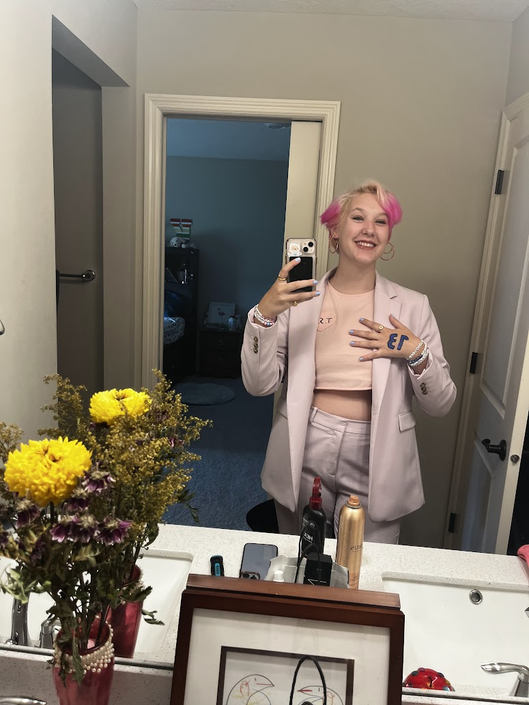

Music
Francis is always listening to music! In 2024 they listened to 2,762 different tracks a total of 15,098 times. Their top artist was Taylor Swift with 4,035 listens. Francis really likes Taylor Swift (some would say Frank is obsessed with Taylor Swift). Frank has been to 3 of her concerts and has seen the Eras Tour Movie at least 5 times. Francis identifies as a Reputation sun, Fearless moon, and Midnights ascendent. Want to hear a fun fact about Taylor Swift? Sure you do. The outro to her song Last Kiss, is 18 seconds, which is the same amount of time it took Joe Jonas to break up with her via voicemail. Frank's last.fm is the best way to keep track of their listening.
francis in 2018 at the reputation stadium tour^
francis in 2023 at the eras tour v
